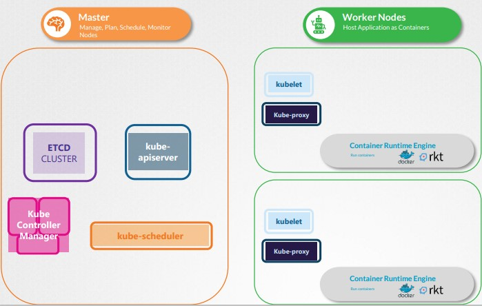
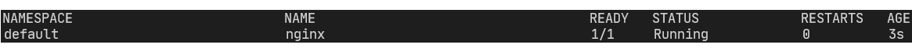
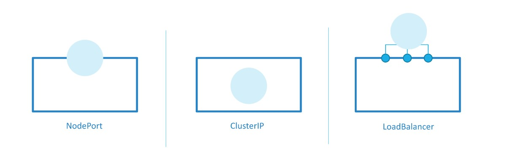
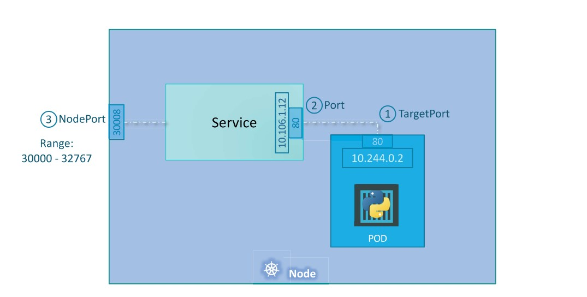
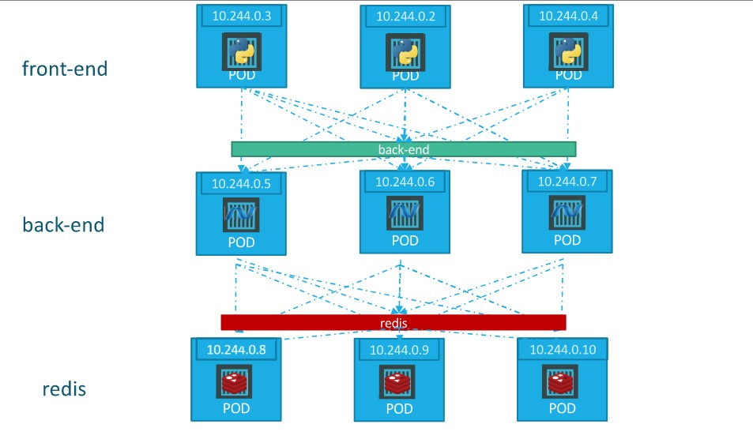

The purpose of Kubernetes is to host an application in the form of a container to automatically handle application scale and more.
Different node types:
Key-value database maintaining information about the cluster, different nodes, containers on each node, etc.
Schedule containers on the worker nodes based on some metrics (node load, etc.)
Responsible for orchestrating all operations within the cluster.
All in Kubernetes is in the form of containers, so there is a CRI (docker, cri-o, etc.).
Listens for instructions from the API sever and deploys or destroys containers on the nodes. The kube-api-server also peroidically fetches updates from the kubelet to monitor status of nodes.
Enables the communication among worker nodes to allow containers on different nodes to communicate.

ETCD is is a distributed reliable key-value store that is simple, secure and fast.
Information are stored in a key-value format. You cannot have duplicate keys. It is used to store and retrieve small chunk of data that requires to be extracted in a fast way. Example of key-value data:
{
"name": "John Doe",
"age": 45,
"location": "New York",
"salary": 5000
}
ETCD can be installed as a service running on port 2379, and it can be manager through the etcdctl CLI that can be used to store and get information from the ETCD database.
ETCD can be downloaded from here https://github.com/etcd-io/etcd/, and after extracting the package you can try the following:
./etcd #run etcd from installation
./ ```etcdctl``` set key1 value1 #store value
./ ```etcdctl``` get key1 #retrieve value
ETCD stores information about nodes, PODs, Configs, Secrets, Accounts, Roles, Bindings, etc. Every information given from the API server comes from the ETCD database.
When making changes interacting with the kubectl CLI, a change is made effective only when stored on ETCD.
Depending on how the cluster is setup, ETCD can be deployed in different modalities.
We can distinguish two types of cluster setup:
ExecStart=/usr/local/bin/etcd \\
--name ${ETCD_NAME} \\
--cert-file=/etc/etcd/kubernetes.pem \\
--key-file=/etc/etcd/kubernetes-key.pem \\
--peer-cert-file=/etc/etcd/kubernetes.pem \\
--peer-key-file=/etc/etcd/kubernetes-key.pem \\
--trusted-ca-file=/etc/etcd/ca.pem \\
--peer-trusted-ca-file=/etc/etcd/ca.pem \\
--peer-client-cert-auth \\
--client-cert-auth \\
--initial-advertise-peer-urls https://${INTERNAL_IP}:2380 \\
--listen-peer-urls https://${INTERNAL_IP}:2380 \\
--listen-client-urls https://${INTERNAL_IP}:2379,https://127.0.0.1:2379 \\
--advertise-client-urls https://${INTERNAL_IP}:2379 \\
--initial-cluster-token etcd-cluster-0 \\
--initial-cluster controller-0=https://${CONTROLLER0_IP}:2380,controller-1=https://${CONTROLLER1_IP}:2380 \\
--initial-cluster-state new \\
--data-dir=/var/lib/etcd
where --advertise-client-urls is the most important indicating where the ETCD service is listening, and this URL should be configured in the API server to tell it where to reach the ETCD.
kubeadm: kubeadm will deploy ETCD server as a pod in the kube-system namespace. Entering the ETCD pod we can run commands using the etcdctl CLI as shown in the previous chapter.kubectl exec etcd-master –n kube-system ```etcdctl``` get / --prefix –keys-only
When deploying ETCD in an HA environment, you should pay attention to make sure all ETCD instances know each other by setting the --initial-cluster property properly.
etcdctl is the CLI tool used to interact with ETCD.
etcdctl can interact with ETCD Server using 2 API versions - Version 2 and Version 3. By default its set to use Version 2. Each version has different sets of commands.
For example etcdctl version 2 supports the following commands:
etcdctl backup
etcdctl cluster-health
etcdctl mk
etcdctl mkdir
etcdctl set
Whereas the commands are different in version 3
etcdctl snapshot save
etcdctl endpoint health
etcdctl get
etcdctl put
To set the right version of API set the environment variable ETCDL_API command
export ETCDL_API=3
When API version is not set, it is assumed to be set to version 2. And version 3 commands listed above don’t work. When API version is set to version 3, version 2 commands listed above don’t work.
Apart from that, you must also specify path to certificate files so that etcdctl can authenticate to the ETCD API Server. The certificate files are available in the etcd-master at the following path.
--cacert /etc/kubernetes/pki/etcd/ca.crt
--cert /etc/kubernetes/pki/etcd/server.crt
--key /etc/kubernetes/pki/etcd/server.key
So the final version of the command to use etcdl from the ETCDL pod is the following:
kubectl exec etcd-master -n kube-system -- sh -c " ETCDL_API=3 etcdctl get / --prefix --keys-only --limit=10 --cacert /etc/kubernetes/pki/etcd/ca.crt \\
--cert /etc/kubernetes/pki/etcd/server.crt --key /etc/kubernetes/pki/etcd/server.key"
It is the primary management component in Kubernetes. When using kubectl you are issuing a request to the kube-apiserver which authenticate the user, validates the request, performs an operation and answers.
For instance, when creating a new POD, you have to submit a POST request to the kube-apiserver which performs the following operations:
kube-apiserver which updates ETCD.As said for ETCD, also the kube-apiserver can be configured both from scratch or with kubeadm. In the first case, you have to install it by its binary and then run it as a service on the master node.
Setting up the cluster from scratch, you can download the APi server from:
wget https://storage.googleapis.com/kubernetes-release/release/v1.13.0/bin/linux/amd64/kube-apiserver
Instead, with kubeadm, the kube-apiserver is deployed as a POD in the master node. The yaml file describing kube-apiserver is at:
/etc/kubernetes/manifests/kube-apiserver.yaml
Here all the configurable options of kube-apiserver:
ExecStart=/usr/local/bin/kube-apiserver \\
--advertise-address=${INTERNAL_IP} \\
--allow-privileged=true \\
--apiserver-count=3 \\
--audit-log-maxage=30 \\
--audit-log-maxbackup=3 \\
--audit-log-maxsize=100 \\
--audit-log-path=/var/log/audit.log \\
--authorization-mode=Node,RBAC \\
--bind-address=0.0.0.0 \\
--client-ca-file=/var/lib/kubernetes/ca.pem \\
--enable-admission-plugins=Initializers,NamespaceLifecycle,NodeRestriction,LimitRanger,ServiceAccount,Defa
ultStorageClass,ResourceQuota \\
--enable-swagger-ui=true \\
--etcd-cafile=/var/lib/kubernetes/ca.pem \\
--etcd-certfile=/var/lib/kubernetes/kubernetes.pem \\
--etcd-keyfile=/var/lib/kubernetes/kubernetes-key.pem \\
--etcd-servers=https://10.240.0.10:2379,https://10.240.0.11:2379,https://10.240.0.12:2379 \\
--event-ttl=1h \\
--experimental-encryption-provider-config=/var/lib/kubernetes/encryption-config.yaml
\\
--kubelet-certificate-authority=/var/lib/kubernetes/ca.pem \\
--kubelet-client-certificate=/var/lib/kubernetes/kubernetes.pem \\
It manages various controllers in Kubernetes. Each controller is responsible of different topics, but each of them act by watching the status of the monitored resource and reconcile the situation to the desired state.
Some examples of Kubernetes controllers are:
Node controller:
The node controller is responsible for monitoring the state of the nodes by checking their status each 5 seconds. If it stops receiving heartbeat from one node, it is marker unreachable after additional 40 seconds.
After a node is marker unreachable, it has 5 minutes to come back up. After that, all PODs are evicted from that node and moved to a live node.
Replication controller: It is responsible for ensuring the desired number of PODs are available within each replicaset. If a POD dies, it creates another one.
When the Kubernetes controller manager is installed, all the controllers are automatically installed, including the two explained above.
You can install the Kubernetes controller manager as a service (from scratch) here:
wget https://storage.googleapis.com/kubernetes-release/release/v1.13.0/bin/linux/amd64/kube-controller-manager
or using kubeadm as a POD in the kube-system namespace.
Here all the configurable options of Kube controller manager:
ExecStart=/usr/local/bin/kube-controller-manager \\
--address=0.0.0.0 \\
--cluster-cidr=10.200.0.0/16 \\
--cluster-name=kubernetes \\
--cluster-signing-cert-file=/var/lib/kubernetes/ca.pem \\
--cluster-signing-key-file=/var/lib/kubernetes/ca-key.pem \\
--kubeconfig=/var/lib/kubernetes/kube-controller-manager.kubeconfig \\
--leader-elect=true \\
--root-ca-file=/var/lib/kubernetes/ca.pem \\
--service-account-private-key-file=/var/lib/kubernetes/service-account-key.pem \\
--service-cluster-ip-range=10.32.0.0/24 \\
--use-service-account-credentials=true \\
--v=2
The scheduler is responsible for deciding which POD goes on which node, without actually creating that POD: the kubelet is then responsible for creating it.
The decision is taken based on two phases:
The kube-scheduler can be installed:
wget https://storage.googleapis.com/kubernetes-release/release/v1.13.0/bin/linux/amd64/kube-scheduler
kubeadm having a POD running in the kube-system namespace.
THe list of configurable options for the scheduler is:ExecStart=/usr/local/bin/kube-scheduler \\
--config=/etc/kubernetes/config/kube-scheduler.yaml \\
--v=2
The kubelet service is responsible for registering the node within the cluster, and waiting for instructions to load a new POD on the node.
Whenever a new POD should be scheduled, it communicates with the CRI to download the image and actually run the container.
Notice that to deploy kubelet there is just one option: installing kubelet and run it as a service on all worker nodes. Kubeadm will not install and configure it for you.
Here is how to download and see kubelet configuration options:
wget https://storage.googleapis.com/kubernetes-release/release/v1.13.0/bin/linux/amd64/kubelet
ExecStart=/usr/local/bin/kubelet \\
--config=/var/lib/kubelet/kubelet-config.yaml \\
--container-runtime=remote \\
--container-runtime-endpoint=unix:///var/run/containerd/containerd.sock \\
--image-pull-progress-deadline=2m \\
--kubeconfig=/var/lib/kubelet/kubeconfig \\
--network-plugin=cni \\
--register-node=true \\
--v=2
Within a Kubernetes cluster every POD can communicate with every other POD. This is obtained by setting up a POD network spanning multiple nodes.
kube-proxy is a process running on each node, which is in charge to look for new Kubernetes services: each time a new service is created, kube-proxy creates the appropriate rule on each node to forward the traffic destined to the services to the actual backend PODs.
One way it does this is using IP tables rules.
Again, kube-proxy can be run as a service or using kubeadm which deploys it as a daemonset, making it running on each node.
Here is how to download kube-proxy as a service and the configurable options:
wget https://storage.googleapis.com/kubernetes-release/release/v1.13.0/bin/linux/amd64/kube-proxy
ExecStart=/usr/local/bin/kube-proxy \\
--config=/var/lib/kube-proxy/kube-proxy-config.yaml
Restart=on-failure
RestartSec=5
We will start from a scenario where you have an application developed and containerized in a Docker image, and a fully-working Kubernetes cluster.
To deploy your application into Kubernetes, you cannot directly deploy the container starting from the image, but you have to first incapsulate the container into a POD.
When the application have to be scaled, a new POD identical to the previous one is deployed on the same Kubernetes node, or in another node.
Usually, PODs have a 1:1 relationship with an application (container), but there are cases in which more than one container can be deployed in the same POD, like sidecar containers. Example of sidecar containers are container repsonsible for collecting logs from the main application’s container.
You can run a simple POD with an nginx container using the following kubectl command:
kubectl run nginx --image nginx
Kubernetes will create a new POD downloading the nginx:latest
image from Docker Hub, and will assign the name “nginx” to the POD. You can then view the available PODs with:
kubectl get pods

At this moment, the POD is only reachable within the cluster using its Cluster IP. We will then see how to deploy a Kubernetes service to make the POD reachable from outside the cluster.
Instead of using the imperative way by running kubectl run, we can also use the declarative way by defining a YAML manifest describing the POD specification and POSTing it to the Kubernetes API server by means of the kubectl apply command.
An example of a basic YAML manifest to deploy an nginx file is the following:
pod-definition.yaml
-------------------
apiVersion: v1
kind: Pod
metadata:
name: nginx-pod
labels:
app: nginx
spec:
containers:
- name: nginx-container
image: nginx:latest
Notice that, for instance, “kind” is a “string” type, while “metadata” is a “dictionary” type. “containers”, on the other hand, is a “list” type.
After that, just run
kubectl apply -f ./pod-definition.yaml
to run the POD. To get details about the POD you can use:
kubectl decribe pod nginx
Name: nginx
Namespace: default
Priority: 0
Node: node1
Start Time: Fri, 18 Feb 2022 15:55:50 +0100
Labels: run=nginx
Annotations: <none>
Status: Running
IP: 10.244.1.75
IPs:
IP: 10.244.1.75
Containers:
nginx:
Container ID: containerd://<...>
Image: nginx
Image ID: docker.io/library/nginx@sha256:<...>
Port: <none>
Host Port: <none>
State: Running
Started: Fri, 18 Feb 2022 15:55:51 +0100
Ready: True
Restart Count: 0
Environment: <none>
Mounts:
/var/run/secrets/kubernetes.io/serviceaccount from default-token-q4qfs (ro)
Conditions:
Type Status
Initialized True
Ready True
ContainersReady True
PodScheduled True
Volumes:
default-token-q4qfs:
Type: Secret (a volume populated by a Secret)
SecretName: default-token-q4qfs
Optional: false
QoS Class: BestEffort
Node-Selectors: <none>
Tolerations: node.kubernetes.io/not-ready:NoExecute op=Exists for 300s
node.kubernetes.io/unreachable:NoExecute op=Exists for 300s
Events:
Type Reason Age From Message
---- ------ ---- ---- -------
Normal Scheduled 4s default-scheduler Successfully assigned default/nginx to node1
Normal Pulling 4s kubelet Pulling image "nginx"
Normal Pulled 3s kubelet Successfully pulled image "nginx" in 938.414773ms
Normal Created 3s kubelet Created container nginx
Normal Started 3s kubelet Started container nginx
To delete the POD, then run:
kubectl delete pod nginx
pod "nginx" deleted
It is possible to have more than one instance of the same application POD within a Kubernetes cluster. This is done by the replication-controller which ensures the desired number of PODs for each application is always available. Keep in mind that the replication-controller spans across multiple nodes: the same application can have a number of pods replicas that are spread across differend kubernetes nodes.
The replication-controller is different from the replica-set: the replication-controller is the old technology replaced by the replica-set. They perform the same operation, but there are minor differences in terms of implementation.
To deploy a replication-controller, we can use the following yaml:
replication-controller-definition.yaml
-------------------
apiVersion: v1
kind: ReplicationController
metadata:
name: nginx-rc
labels:
app: nginx
spec:
template: # The template defines which PODs the replication-controller must create
metadata:
name: nginx-pod
labels:
app: nginx
spec:
containers:
- name: nginx-container
image: nginx:latest
replicas: 3 # Number of PODs to create
Running the command:
kubectl get replicationcontroller
we can see the replication-controller in the cluster.
The replica-set, instead, is slightly different. It includes a selector section where you must specify to tell the replica-set which PODs will fall under it. This is because the replica-set can also manage PODs that are not created together with the replica-set. For instance, the replica-set can manage PODs that are created before the creation of the replica-set itfself.
replication-controller-definition.yaml
-------------------
apiVersion: apps/v1
kind: ReplicaSet
metadata:
name: nginx-rs
labels:
app: nginx
spec:
template:
metadata:
name: nginx-pod
labels:
app: nginx
spec:
containers:
- name: nginx-container
image: nginx:latest
replicas: 3
selector:
matchLabels:
app: nginx
Running the command:
kubectl get replicaset
we can see the replica-sets in the cluster.
A way to imperatively scale a replica-set is the following:
kubectl scale --replicas=6 replicaset nginx-rs
Deployments are Kubernetes objects incapsulating the replica-set object. The deployment provides us with the capability to upgrade the underlying instances seamlessly using a rolling update strategy, undo changes and pause and resume changes.
The following is a YAML of a Kubernetes deployment.
deployment-definition.yaml
-------------------
apiVersion: apps/v1
kind: Deployment
metadata:
name: nginx-deploy
labels:
app: nginx
spec:
template:
metadata:
name: nginx-pod
labels:
app: nginx
spec:
containers:
- name: nginx-container
image: nginx:latest
replicas: 3
selector:
matchLabels:
app: nginx
When creating a Kubernetes deployment, also the corresponding replicaset and PODs are created. It is possible to see all created resources at once by running:
kubectl get all
As you might have seen already, it is a bit difficult to create and edit YAML files. Especially in the CLI. During the exam, you might find it difficult to copy and paste YAML files from browser to terminal. Using the kubectl run command can help in generating a YAML template. And sometimes, you can even get away with just the kubectl run command without having to create a YAML file at all. For example, if you were asked to create a pod or deployment with specific name and image you can simply run the kubectl run command.
Use the below set of commands to speed up resource creation. Reference (Bookmark this page for exam. It will be very handy): https://kubernetes.io/docs/reference/kubectl/conventions/
kubectl run nginx --image=nginx
kubectl run nginx --image=nginx --dry-run=client -o yaml
kubectl create deployment --image=nginx nginx
kubectl create deployment --image=nginx nginx --dry-run=client -o yaml
kubectl create deployment --image=nginx nginx --dry-run=client -o yaml > nginx-deployment.yaml
kubectl create -f nginx-deployment.yaml
OR
In k8s version 1.19+, we can specify the –replicas option to create a deployment with 4 replicas.
kubectl create deployment --image=nginx nginx --replicas=4 --dry-run=client -o yaml > nginx-deployment.yaml
Namespaces represent logical partitioning of a Kubernetes cluster where Kubernetes resources can be put into. By default, Kubernetes creates three namespaces when a cluster is created:
You can create your own namespace as well:
kubectl create namespace dev
Each namespace can have a set of enforcements, like:
A given POD can reach both services in its same namespace as well as services in other namespaces:
You can list resources specifying the namespace:
kubectl get pods -n namespace
or to get PODS in all namespaces:
kubectl get pods --all-namespaces
or
kubectl get pods -A
You can also specify what is the default namespace using the command:
kubectl config set-context $(kubectl config current-context) --namespace=dev
To limit the amount of resources to allocate to a given namespace, you can create a resource-quota. An example is:
resource-quota-definition.yaml
----------------
apiVersion: v1
kind: ResourceQuota
metadata:
name: compute-quota
namespace: dev
spec:
hard:
pods: "10"
requests.cpu: "4"
requests.memory: 5Gi
limits.cpu: "10"
limits.memory: 10Gi
Kubernetes services enable communication between various components within and outside an application, and help connect application together and other applications to users. There are different types of Kubernetes services:

The nodeport service maps a port on the Kubernetes nodes with a port on the POD running inside the cluster.

In this scenario, we have different definitions:
nodeport-definition.yaml
----------------
apiVersion: v1
kind: Service
metadata:
name: nodeport-service
spec:
type: NodePort
ports:
- targetPort: 80
port: 80
nodePort: 30008
selector:
app: nginx
The only mandatory field is port, the targetPort is automatically set to the port value, and the nodePort is automatically chosen between 30000 and 32767. The service is connected to the application through the selector specification, which in the example matches the label app.
Clearly, the service is not commonly used to expose a single POD, but instead to expose a whole deployment, performing automatic balance among replicas in the deployment. The load is distributed in a random fashion using the principle of session affinity.
Usually an application is composed by different layers, a frontend, a backend and a data layer. PODs in different layers need to communicate with each other. To do this, they cannot use the IP assigned to the POD itself, since this IP is ephemeral and will be changed each time the POD is restarted for some reasons. Therefore, the cluster-ip service provides PODs (or deployments) with a stable internal IP to allow inter PODs communication.

A cluster-ip service is defined as follows:
cluster-ip-definition.yaml
----------------
apiVersion: v1
kind: Service
metadata:
name: cluster-ip-service
spec:
type: ClusterIP
ports:
- targetPort: 80
port: 80
selector:
app: nginx
If an application should be accessed by end-users, we need to provide a single entry-point to it. Nodeport service will make the application accessible using any one of the cluster nodes' IPs on the given nodeport. Therefore, the load-balancer service comes in by assigning a public IP to the service using a supported cloud load balancer.
A load-balancer service is defined as follows:
load-balancer-definition.yaml
----------------
apiVersion: v1
kind: Service
metadata:
name: load-balancer-service
spec:
type: LoadBalancer
ports:
- targetPort: 80
port: 80
selector:
app: nginx
A Kubernetes service can also be created in the imperative way using:
kubectl expose pod nginx --type=NodePort --port=80 --name=nginx-service
or to specify the service type
kubectl create service clusterip nginx --tcp=6379:6379 --dry-run=client -o yaml
Both the above commands have their own challenges. While one of it cannot accept a selector the other cannot accept a node port. I would recommend going with the kubectl expose command. If you need to specify a node port, generate a definition file using the same command and manually input the nodeport before creating the service.
So far we’ve seen different ways of creating and managing Kubernetes resources. In the infrastructure as code world there are two ways of creating resources: imperative and declarative way. The imperative way, consists in specifying what to do and how to do it accordingly. The declarative approach consists in specifying the final desired outcome and the system will figure out what to do to reach the desired result.
In the imperative approach, we declare step-by-step what to do:
1. Provision a VM by the name 'web-server'.
2. Install NGINX software on it.
3. Edit configuration file to use port '8080'
In the declarative way, we specify the outcome:
VM Name: web-server
Package: nginx
Port: 8080
In the Kubernetes world, the imperative way is implemented by using kubectl commands. For instance:
kubectl run --image=nginx nginx
The declarative approach, is instead implemented using YAML manifest files. For instance:
nginx-pod.yaml
---------------
apiVersion: v1
kind: Pod
metadata:
labels:
run: nginx
name: nginx
spec:
containers:
- image: nginx
name: nginx
dnsPolicy: ClusterFirst
restartPolicy: Always
The suggested way to do things is using the declarative approach, to keep track of what has been done and implement idempotent configurations. In the exam, however, the imperative way is very useful to speed up commands execution.
The Kubectl Apply command can be used to create or update Kubernetes objects starting from a yaml configuration file. When applying a Kubernetes manifests, there are two possibilities of how Kubernetes actually manages it:
nginx-deployment.yaml
---------------
apiVersion: apps/v1
kind: Deployment
metadata:
annotations:
# ...
kubectl.kubernetes.io/last-applied-configuration: |
{"apiVersion":"apps/v1","kind":"Deployment",
"metadata":{"annotations":{},"name":"nginx-deployment","namespace":"default"},
"spec":{"selector":{"matchLabels":{"app":nginx}},"template":{"metadata":{"labels":{"app":"nginx"}},
"spec":{"containers":[{"image":"nginx:1.16.1","name":"nginx",
"ports":[{"containerPort":80}]}]}}}}
# ...
spec:
selector:
matchLabels:
# ...
app: nginx
replicas: 2 # Set by `kubectl scale`. Ignored by `kubectl apply`.
# minReadySeconds cleared by `kubectl apply`
# ...
template:
metadata:
# ...
labels:
app: nginx
spec:
containers:
- image: nginx:1.16.1 # Set by `kubectl apply`
# ...
name: nginx
ports:
- containerPort: 80
# ...
# ...
# ...
# ...